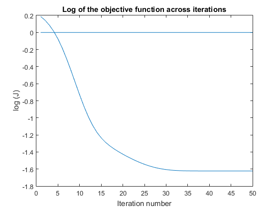
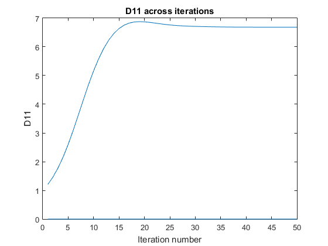
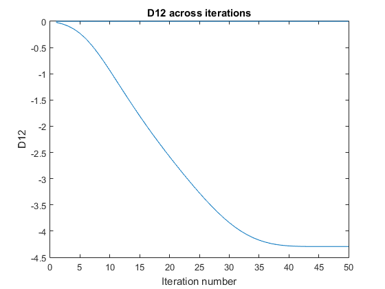
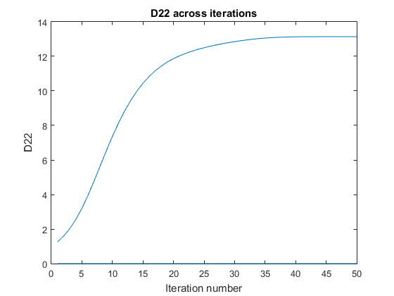

Contents
clc; clear all; close all;
Data
data = [0.5045 - 0.0217i, 0.6874 + 0.0171i, 0.3632 + 0.1789i, 0.3483 + 0.1385i, 0.2606 - 0.0675i, 0.2407 + 0.1517i];
S1 = real(data);
S2 = abs(data);
G = [1,0; 0.866,0.5; 0.5,0.866; 0,1; -0.5,0.866; -0.866,0.5]; % matrix with the gradient vectors as rows
b = 0.1;
S0 = 1;
Part a: Estimation of D
% D = L*L' = | L11 0 |*| L11 L21 | = | L11^2 L11*L21| % | L21 L22 | | 0 L22 | | L11*L21 L21^2+L22^2| % Initialize D to I L = eye(2); k = 0.1; % step size for gradient descent ep = 0.01; % threshold for gradient descent max_iter = 50; % maximum number of iterations in gradient descent D11 = zeros(max_iter); D12 = zeros(max_iter); D21 = zeros(max_iter); D22 = zeros(max_iter); logJ = zeros(max_iter); % Start gradient descent J = obj( S1,b,G,S0,L ); delta = zeros(2); for i=1:max_iter [ delta(1,1),delta(2,1),delta(2,2) ] = grad( S1,b,G,S0,L ); L = L - k*delta; % update L J_n = obj( S1,b,G,S0,L ); % new value of the objective function if(J_n<J) k = k*1.1; else k = 0.5*k; end % Project onto constraint set if(L(1,1)<0) L(1,1)=0; end if(L(2,2)<0) L(2,2)=0; end J = J_n; D = L*L'; D11(i) = D(1,1); D12(i) = D(1,2); D21(i) = D(2,1); D22(i) = D(2,2); logJ(i) = log10(J); end D figure() plot(logJ) xlabel('Iteration number'); ylabel('log (J)'); title('Log of the objective function across iterations') figure() plot(D11) xlabel('Iteration number'); ylabel('D11'); title('D11 across iterations'); figure() plot(D12) xlabel('Iteration number'); ylabel('D12'); title('D12 across iterations'); figure() plot(D21) xlabel('Iteration number'); ylabel('D21'); title('D21 across iterations'); figure() plot(D22) xlabel('Iteration number'); ylabel('D22'); title('D22 across iterations');
D =
6.6871 -4.2941
-4.2941 13.1410
    Part b
The direction along which the diffusion in the 2D plane is the strongest is the eigenvector of D coresponding to the largest eigenvalue
[E,e] = eig(D);
fprintf('Principal direction along which the diffusion in the 2D plane is the strongest = [%f, %f] \n',E(1,2),E(2,2))
Principal direction along which the diffusion in the 2D plane is the strongest = [-0.446789, 0.894639]
Part c
Eigenvectors of a positive definite matrix are orthogonal. Hence, the ratio of diffusion in the principal direction as compared to that in the orthogonal direction is simply the ratio of their respective eigenvalues
fprintf('Diffusion in the principal direction is more as compared to the diffusion in the direction orthogonal to it by a factor of %f \n',e(2,2)/e(1,1))
Diffusion in the principal direction is more as compared to the diffusion in the direction orthogonal to it by a factor of 3.364914